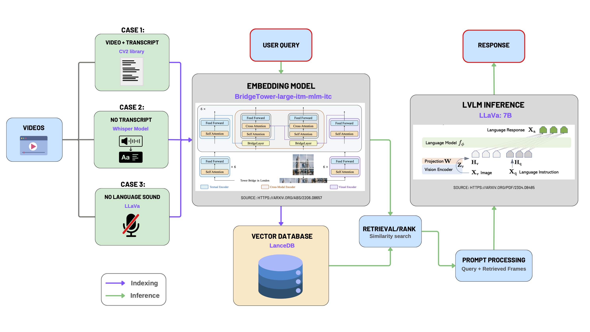
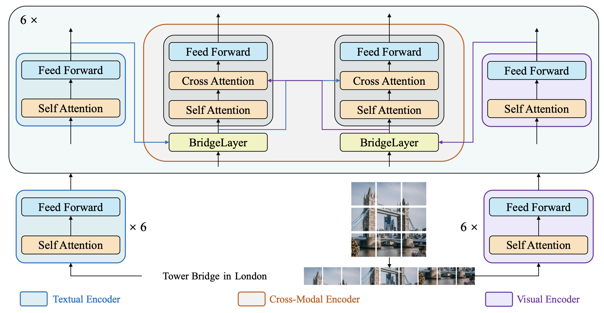
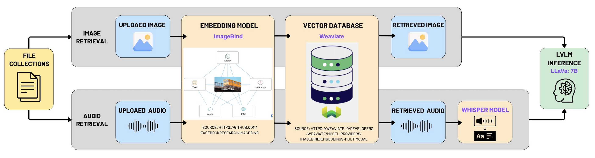

Implementation
Project Structure
The ChatLincs system’s project structure is cleanly divided into a frontend presentation layer and a backend service layer, promoting separation of concerns and facilitating scalability, testability, and maintainability.
üñ•Ô∏è Frontend Architecture (/frontend)
The frontend follows a component-driven development paradigm using React with Next.js, enabling server-side rendering (SSR) and route-based code splitting for optimized performance.
Key Layers and Modules:
/src/app/
Implements the application shell and routing layer, aligning with the Next.js App Router structure. Key UI workflows (e.g., chat interface, video-chat interaction, document upload) are defined here using functional components and TypeScript for static typing./src/components/
Contains presentation components (UI primitives and widgets), adhering to the DRY principle and promoting UI reusability./public/
Serves as the static content delivery layer, holding global assets exposed via CDN paths.- Configurations (
tsconfig,tailwind.config,next.config)
Define build behavior, design tokens, and compile-time constraints, improving developer experience (DX) and code quality assurance.
üîå Backend Architecture (/backend)
The backend is implemented in Python, structured in accordance with microservice-oriented principles, exposing RESTful endpoints via Flask. It integrates with multiple ML pipelines and supports asynchronous processing, modular data flow, and containerized deployment.
Core Modules:
/app/services/
Encapsulates domain logic related to multimodal data processing, including embedding generation, semantic search, and video/audio feature extraction. Promotes Single Responsibility Principle (SRP) and is designed to be unit-testable./app/routes.py
Functions as the API routing layer, binding HTTP routes to corresponding service handlers. Serves as the controller in a pseudo-MVC setup./app/utils/
Provides helper methods and low-level utilities, reducing code duplication across services./ollama-models/
Dedicated to LLM model integration, possibly supporting model inference endpoints, or external model runtime./shared_data/,/uploads/
Implements shared memory structures and transient file storage, supporting inter-module communication and persistence.docker-compose.yml
Defines multi-container orchestration, supporting reproducible deployment across environments. Enables horizontal scalability and integration with vector databases or external APIs.run.py
Acts as the application entrypoint, bootstrapping the Flask app and initializing critical resources.
Features
- Video Interaction: AI-supported queries and discussions about video content.
- Multimodal RAG: AI-driven insights from images, text, and audio.
- Geographic Map View: Interactive map visualization of stored data.
- Task Management (Kanban Board): Prioritize tasks, assign categories, and track progress intuitively.
Video Interaction
This module enables intelligent interaction with videos through a multimodal LLM pipeline. It supports video upload, transcription, frame extraction, embedding generation, vector database storage, and semantic retrieval via user queries.

1. Video Preprocessing
For convenient video uploads, we utilized Python libraries including pytubefix and youtube_transcript_api to enable seamless streaming and downloading of YouTube videos directly.
The video preprocessing step addresses three distinct scenarios based on the availability of video transcripts:
- Case 1: Both video and transcript are available.
- Case 2: Video is available without a transcript.
- Case 3: Video without any spoken language (e.g., silent videos or videos with only background music).
üìÑ Case 1: Video with Transcript
Video transcripts from platforms like YouTube typically follow the WEBVTT format, structured as sequential text segments associated with specific timestamps:
WEBVTT
00:00:03.620 --> 00:00:06.879
As I look back on the mission that we've had here
00:00:06.879 --> 00:00:10.559
on the International Space Station,
I'm proud to have been a part of much of
00:00:10.559 --> 00:00:13.679
the science activities that happened over the last
00:00:13.680 --> 00:00:14.420
two months.
We process this format by associating each textual segment with a corresponding central video frame. Frames are extracted using the OpenCV (cv2) library at timestamps calculated as the midpoint of the transcript intervals.
for idx, transcript in enumerate(trans):
start_time_ms = str2time(transcript.start)
end_time_ms = str2time(transcript.end)
mid_time_ms = (end_time_ms + start_time_ms) / 2
text = transcript.text.replace("\n", ' ')
video.set(cv2.CAP_PROP_POS_MSEC, mid_time_ms)
success, frame = video.read()
if success:
image = maintain_aspect_ratio_resize(frame, height=350)
img_fname = f'frame_{idx}.jpg'
img_fpath = osp.join(
path_to_save_extracted_frames, img_fname
)
cv2.imwrite(img_fpath, image)
metadata = {
'extracted_frame_path': img_fpath,
'transcript': text,
'video_segment_id': idx,
'video_path': path_to_video,
'mid_time_ms': mid_time_ms,
}
metadatas.append(metadata)
üìÑ Case 2: Video Available Without Transcript
When the transcript is unavailable, we generate transcripts using OpenAI's Whisper model for automatic speech recognition (ASR):
- Extract audio track from the video using
moviepy. - Perform speech-to-text transcription with Whisper (
smallmodel), translating into English if necessary. - Generate a new WEBVTT-format transcript file.
- Apply frame extraction and metadata generation as described in Case 1.
model = whisper.load_model("small")
options = dict(task="translate", best_of=1, language='en')
results = model.transcribe(extracted_audio_file, **options)
vtt = getSubs(results["segments"], "vtt")
generated_trans = osp.join(video_dir, 'generated_transcript.vtt')
üìÑ Case 3: Video Without Spoken Language (Silent Videos)
For silent videos, we utilize a Large Vision-Language Model (LLaVA-7b) to automatically generate descriptive captions for frames extracted at regular intervals.
# generate caption using lvlm_inference
# b64_image = encode_image(img_fpath)
caption = ollama_inference("Can you describe the image?", img_fpath)
metadata = {
'extracted_frame_path': img_fpath,
'transcript': caption,
'video_segment_id': idx,
'video_path': path_to_video,
2. Multimodal Embedding using BridgeTower
We leverage the BridgeTower model for generating multimodal embeddings. BridgeTower employs a dual-tower transformer architecture:
- Left Tower: Text Transformer (text input).
- Right Tower: Vision Transformer (image patches).
- Cross-Attention Blocks: Produce joint embeddings from textual and visual representations.
def bt_embedding_local(prompt, base64_image):
processor = BridgeTowerProcessor.from_pretrained("BridgeTower/bridgetower-large-itm-mlm-itc")
model = BridgeTowerForContrastiveLearning.from_pretrained("BridgeTower/bridgetower-large-itm-mlm-itc")
MAX_LENGTH = 512
tokens = processor.tokenizer(prompt, return_tensors="pt", truncation=True, max_length=MAX_LENGTH)
prompt = processor.tokenizer.decode(tokens["input_ids"][0])
message = {"text": prompt}
image = None
if base64_image:
if not isBase64(base64_image):
raise TypeError("image input must be in base64 encoding!")
image_data = base64.b64decode(base64_image)
image = Image.open(io.BytesIO(image_data)).convert("RGB")
encoding = processor(image, prompt, return_tensors="pt") if image else processor(text=prompt, return_tensors="pt")
input_shape = encoding["input_ids"].shape[1] if "input_ids" in encoding else 0
pixel_shape = encoding["pixel_values"].shape[1] if "pixel_values" in encoding else 0
print(f"input_ids shape: {input_shape}, pixel_values shape: {pixel_shape}")
outputs = model(**encoding)
return outputs.text_embeds[0].detach().cpu().numpy().tolist()
We transformed the processed video into image-text pairs and input them into BridgeTower, obtaining 512-dimensional embeddings that are stored within a shared multimodal semantic space.
3. Data Ingestion into LanceDB
We utilize LanceDB as our vector database, storing multimodal embeddings for efficient semantic retrieval:
# Ingest data into lanceDB
# initialize an BridgeTower embedder
embedder = BridgeTowerEmbeddings()
_ = MultimodalLanceDB.from_text_image_pairs(
texts=updated_video_trans,
image_paths=video_img_path,
embedding=embedder,
metadatas=video_metadata,
connection=db,
table_name=TBL_NAME,
mode="overwrite",
)
Additionally, we offer a configurable Transcript Augmentation feature, allowing users to expand the contextual scope of each frame's transcript. The parameter n specifies the number of neighboring segments to include:
n = int(request.form.get('n',6))
updated_video_trans = [
' '.join(video_trans[i - int(n / 2): i + int(n / 2)]) if i - int(n / 2) >= 0 else
' '.join(video_trans[0: i + int(n / 2)]) for i in range(len(video_trans))
]
4. Multimodal Retrieval using LangChain
Retrieval leverages semantic similarity search between user queries and the embedded video segments. This retrieval logic integrates LangChain's composable chain architecture for systematic query processing:
client = LocalLLMClient()
lvlm_inference_module = LVLM(client=client)
# the output of this new chain is a dictionary
video_rag_chain_with_retrieved_image = (
RunnableParallel({
"retrieved_results": retriever_module,
"user_query": RunnablePassthrough()
})
| prompt_processing_module
| RunnableParallel({
'final_text_output': lvlm_inference_module,
'input_to_lvlm': RunnablePassthrough()
})
)
Multimodal RAG
The overall architecture and implementation strategy for our Multimodal Retrieval-Augmented Generation (RAG) system closely mirrors the approach used in the "Chat with Video" module. The fundamental idea is to integrate multimodal data—including images, audio clips, and videos—into a unified semantic space. To achieve this, we employ a powerful multimodal embedding model, ImageBind, coupled with the vector database Weaviate, enabling effective multimodal indexing and retrieval.

1. Multimodal Data Indexing with Weaviate
The first phase of the implementation involves indexing multimodal content by transforming each data modality into vector representations using ImageBind embeddings. These embeddings are then stored in Weaviate, a high-performance, scalable vector database designed specifically for multimodal search scenarios.
The following code snippet demonstrates how a new collection with multimodal vectorization is created in Weaviate:
# Check if the specified collection already exists
if not client.collections.exists(collection_name):
# Create a new multimodal-enabled collection
client.collections.create(
name=collection_name,
vectorizer_config=weaviate.classes.config.Configure.Vectorizer.multi2vec_bind(
audio_fields=["audio"],
image_fields=["image"],
video_fields=["video"],
)
)
print(f"Collection '{collection_name}' created.")
Detailed Explanation:
- We verify the existence of the specified collection in Weaviate to avoid conflicts or duplication.
- The
multi2vec_bindconfiguration from Weaviate leverages ImageBind to generate embeddings across three modalities—audio, image, and video—ensuring that all data types are represented uniformly within a shared semantic space. - The fields
audio_fields,image_fields, andvideo_fieldsexplicitly define which schema fields should be processed for each modality.
2. Multimodal Retrieval Process
Upon receiving a user query, the system leverages multimodal similarity search within Weaviate's vector space. This retrieval capability supports not only traditional text-based queries but also multimodal queries, enabling image-to-media, audio-to-media, and video-to-media search functionality. This significantly enhances user interaction by allowing versatile and intuitive queries.
Below is the detailed implementation of multimodal retrieval logic:
# Iterate over available collections and schema properties
for coll_name, collection in collections:
schema = client.collections.export_config(coll_name)
available_properties = [prop.name for prop in schema.properties]
# Define relevant properties to return for retrieved objects
return_properties = [
prop for prop in ['name', 'path', 'mediaType', 'collection', 'image', 'audio', 'video']
if prop in available_properties
]
# Perform retrieval based on provided query type and media content
if file_base64 and file_query_type:
if file_query_type == "near_image":
response_file = collection.query.near_image(
near_image=file_base64,
return_properties=return_properties,
limit=1
)
elif file_query_type == "near_media":
response_file = collection.query.near_media(
media=file_base64,
media_type=getattr(wq.NearMediaType, media_type),
return_properties=return_properties,
limit=1
)
Detailed Explanation:
- Collection and Schema Exploration: The retrieval process begins by accessing each relevant collection within Weaviate. It dynamically extracts available schema properties, ensuring adaptability to different collections and avoiding hard-coded assumptions.
- Property Selection: The system selectively retrieves properties like
name,path,mediaType, and specific modality fields (image,audio,video), providing rich metadata alongside the retrieved embeddings. - Multimodal Query Handling: The retrieval logic handles two main query types:
- near_image Query: Performs similarity searches specifically optimized for image-based queries.
- near_media Query: More general and versatile, capable of handling any media type specified by
media_type, such as images, videos, or audio clips. This is facilitated by thegetattrcall, dynamically mapping the media type string to Weaviate’sNearMediaTypeenum.
Geographic Map
Our geographic map view integrates geospatial search capabilities using the Geopy library combined with a SQLite database to enable efficient querying and retrieval of multimedia content based on geographic proximity and textual relevance. This feature allows users to intuitively visualize and explore content geographically, providing valuable spatial insights into multimedia data.
1. Data Retrieval from SQLite Database
We first establish a connection to our SQLite database, accessing multimedia records stored in the media table. Each record typically contains multimedia file metadata, including:
- File identifier (
id) - File path (
file_path) - Description text (
description) - Location information (
address,latitude,longitude)
The following code demonstrates connecting and retrieving data from the SQLite database:
import sqlite3
# Connect to the SQLite database
conn = sqlite3.connect(db_path)
cursor = conn.cursor()
# Execute SQL query to retrieve all media records
cursor.execute('SELECT * FROM media')
2. Geospatial Filtering with Geopy
After fetching multimedia records from the database, we filter the results based on geospatial proximity using the Geopy library's geodesic distance calculation. This approach efficiently identifies content within a specified radius (in kilometers) from a given geographic coordinate (latitude and longitude).
Detailed steps:
- Ensure each media record includes valid latitude and longitude.
- Use Geopy’s
geodesicmethod to compute distance from the user's location. - Filter records within a target radius and optionally match a keyword in the description.
Here is the complete and clearly documented implementation:
from geopy.distance import geodesic
results = []
# Iterate through all media entries fetched from the database
for row in cursor.fetchall():
file_id, file_path, description, address, lat, lon = row
# Skip records with missing geographic coordinates
if lat is None or lon is None:
continue
# Calculate geographic distance between user-specified point and current media location
distance = geodesic((latitude, longitude), (lat, lon)).km
# Check if the media item is within the defined radius and optionally matches the keyword
if distance <= radius_km and (keyword is None or keyword.lower() in description.lower()):
results.append({
'id': file_id,
'file_path': file_path,
'description': description,
'address': address,
'latitude': lat,
'longitude': lon,
'distance_km': distance
})
3. Detailed Explanation of Code Functionality
- Database Connectivity (
sqlite3): Provides lightweight and reliable storage for local metadata, ideal for media indexing and spatial queries in small-scale applications. - Geospatial Computation (
Geopy): Usesgeodesicto calculate the most accurate distance across Earth’s surface between two coordinates. - Conditional Filtering and Keyword Matching: Allows combined location-aware and keyword-aware searches, delivering rich, contextually relevant, and geographically nearby results.
Task Management
The task management module supports the full lifecycle of environmental action items. It leverages a Kanban-style interface with three columns—To Do, In Progress, and Done—to visually organize and track tasks across different stages. The core logic is built using React with state hooks and @hello-pangea/dnd for drag-and-drop functionality.
1. Drag-and-Drop with Status Update and Completion Sync
A highlight of this implementation is the intuitive drag-and-drop feature that not only reorders tasks but also updates their statuses and associated boolean flags. For instance, when a task is moved to the Done column, the system automatically marks it as completed:
if (destination.droppableId === "done") {
movedTask.isCompleted = true
} else if (source.droppableId === "done") {
movedTask.isCompleted = false
}
This logic ensures consistency between visual status and internal boolean flags, simplifying downstream filtering and display.
2. Dynamic Task State Management
Tasks are managed via React’s useState, allowing real-time updates and reactivity. Task creation, editing, deletion, and toggling completion are all handled through dedicated handler functions. For example, toggling a task's completion status updates both its isCompleted flag and status conditionally:
toggleTaskCompletion = (taskId: string) => {
setTasks(tasks.map((task) =>
task.id === taskId
? { ...task, isCompleted: !task.isCompleted, status: !task.isCompleted ? "done" : task.status }
: task,
))
}
This ensures tasks manually marked as completed are synchronized with the visual Done column, even if not dragged there.
3. Task Creation and Dialog-Based UX
New tasks can be added via a modal dialog with a clear form interface. The task data is partially pre-filled with sensible defaults (e.g., medium priority, false isCompleted) and validated before being added to the state:
if (newTask.title && newTask.description) {
setTasks([...tasks, { ...newTask, id: Date.now().toString(), status: "todo", isCompleted: false } as Task])
}
This improves UX by preventing incomplete task submissions and ensuring each task has a unique identifier based on a timestamp.
4. Modal-Based Task Editing
Editing an existing task is achieved through a separate dialog modal that pre-fills the form with the selected task’s data. Updates are committed to the state array by matching the task ID:
setTasks(tasks.map((task) => (task.id === editingTask.id ? editingTask : task)))
This modular modal approach ensures minimal context switching for users and aligns with modern HCI patterns for in-place editing.
5. Visual Design and Priority Tags
Each task card includes colored priority tags, deadline, assignee, and category info for easy scanning. Priority levels are clearly encoded with contextual background colors:
<span className={`px-2 py-1 text-xs font-semibold rounded-full ${
task.priority === "high" ? "bg-red-100 text-red-800" :
task.priority === "medium" ? "bg-yellow-100 text-yellow-800" :
"bg-green-100 text-green-800"
}`}>
{task.priority}
</span>
These visual cues improve task triaging and urgency assessment.
6. Reusable UI Components and Feedback System
The UI is constructed with reusable components from a design system (shadcn/ui), enhancing maintainability. Toast messages (useToast) are used to confirm user actions, providing real-time feedback for improved user experience:
toast({
title: "Task Deleted",
description: "The task has been successfully deleted.",
variant: "destructive",
})
This feedback pattern ensures clarity and user confidence across interactions.